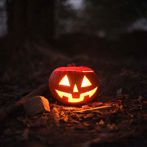

Crafts
This halloween season we are bringing back our step-by-step pumpkin carving tutorial! What you will need for this activity:
- Pumpkins
- Serrated Knife/Pumpkin carving saws
- Metal spoons
- Bowl
- Papertowel

Before you get started, make sure you have a large working space with a drop sheet of your choice that you don't mind getting messy!